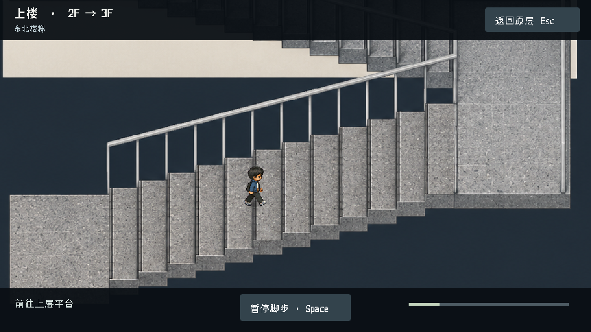

把动力接过去
从零件盘选齿轮，拖到中间轴位。尺寸决定两轮能否啮合；直接观察空隙和顶住的位置。
7:55 · FUTURE LEARNING CENTER
折返楼梯、灰色石材、细扶手，以及实拍里的白色工位和零件架。
GODOT 实际场景 / 上下楼视角
两段梯段反向折返，右侧平台转向。上楼时镜头看向上层，下楼时看向下层；人物沿踏步行走，经过后侧梯段时由前景扶手遮挡。

按实拍的楼梯形式与材质重建，采用统一正交斜俯视。梯段尺寸和级数是当前评审模型；原平面图中的楼梯位置、楼层连接保持不变。点击暂停可停在踏步上，Esc 返回原层。
GODOT / 可操作试玩
点击实验室中央操作台，人物会走过去。近距离观察齿轮和皮带，装入零件后按台上的开关试转。齿轮不合、皮带打滑、传动反向都会直接显示在机构上，可以随时拆回重试。
键鼠和触屏均可操作；也可用 1–3 选零件、B 翻皮带、T 调松紧、空格试转、Esc 返回房间。
先看失败画面，再挪动场景里的物件。白板必须挡住照向展品的强光，同时不能挡住相机。换一侧入光后，原来的摆法可能失效。
GODOT 实际场景 / 操作区与家具
中央增加一张独立装配台，配工具车、零件架和座椅。点击操作台即可走近操作，装配状态会保留在台上；四周留出取件、试转和返回门口的通道。

设备摆位与传动小实验属于游戏设计提案；实际场地的房间边界、门口和楼层通道保持原有关系。
操作台 / 已可试玩
从零件盘选齿轮，拖到中间轴位。尺寸决定两轮能否啮合；直接观察空隙和顶住的位置。
按台上的开关，看电机、齿轮、皮带和送料块。哪一段停止，问题就发生在哪一段。
改绕带方式、调松紧，再试一次。零件可以反复装拆；成功后留在台上，返回实验室还能再次操作。
完整段落 / 约 15–20 分钟的设计目标
从电梯或楼梯进入开放平台。记录员试拍，画面中的演示标记过曝。玩家靠近相机看回放，推移白板，直接看到投影和取景改变。
本页已实现：拖动、阴影、遮挡判断、试拍和 NPC 状态对白。到团队工作区，把试拍结果给制作同学看。在真实工作台上调遮光片的伸出长度和角度；错误装法会挡住镜头或留下一侧漏光，可随时拆回。
提案：在物件上装配和测试。设备种类与摆位先按现场资料核实。在协作区，用两段不同入光条件的回放验证方案。NPC 按玩家留下的装配状态复现；玩家需要观察他哪里用错，并在实物上改正。
提案：以可重复的结果检验方案，避免答题式对话选项。回到原来的大平台，保留场景中的人员和物件。附件通过两种条件的试拍后，记录员完成拍摄；桌面留下成品，角色对白和动作随完成状态变化。
提案：成功反馈留在场景中；与既有章节的交接另行接入。看光从哪边来、相机拍到了什么；推白板，比较改变前后；装一个可复用附件；教同伴复现。失败只反馈“过曝”“被挡住”或“另一侧仍漏光”，不扣物品、不回退整层。
NPC 会在试拍、失败和完成时换动作与对白。完整游戏里，接近后按空格或点按角色；移动、拖动物件和交互保持键鼠与触屏一致。
灰色一体地面保持连续。工作区按实景把长桌、椅子、设备和储物柜组成工作岛；平台中央留活动净空，在边缘布置有依据的设施。用 NPC 活动、局部照明和落地阴影区分区域。
二楼中央取消虚构的围墙与门。人物、桌椅、显示器和白板先在同一画面校准比例，再展开到整层。本页光向切换只用于检验机制；正式游戏仍读取章节时间。
浙大工程创新中心介绍了在此展示的四足机器人工坊及仿真、实控、反馈过程。可支撑后续“路径验证”支线；不能据此断言某个房间常设哪台设备。
浙大官方报道 ↗《浙江日报》现场报道了车队设计工具推车、修改承重结构的过程。可形成“载荷平衡与运输”的另一条动手支线。
现场报道 ↗已找到浙江大学账号发布的参访视频。视频尚未完成逐镜检查；不会把标题检索当成房间与设备位置的证据。
打开参访视频 ↗“拍摄异常”、三位角色及附件任务均为游戏提案。中央平台的实际采光口、栏杆与设备摆位仍需实景核对。其余整层家具比例尚未通过验收，当前版本不标为完成。
以下是 Godot 场景导出的检查图。二楼平台已取消门和围墙；整层物件比例继续按实景校准。